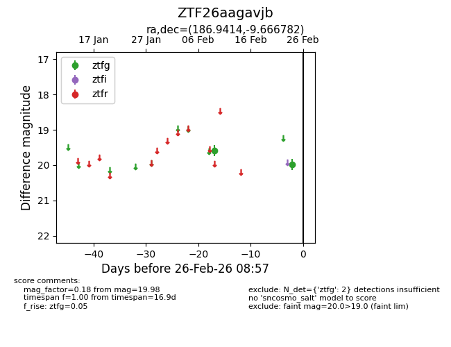
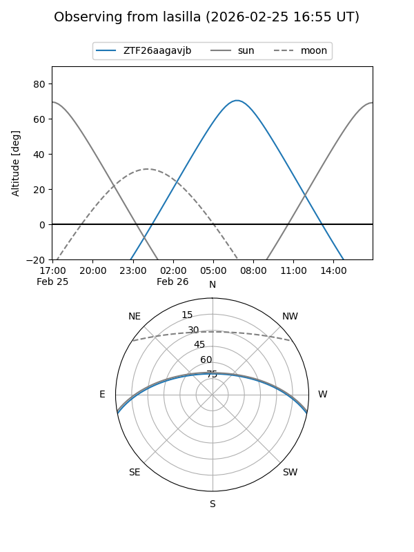
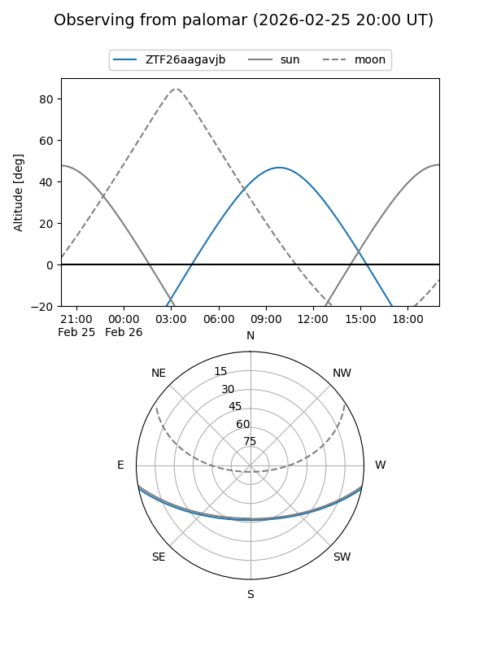

ZTF26aagavjb
Target ZTF26aagavjb at 2026-02-26 08:58
Aliases and brokers:
FINK: link
Lasair: link
ALeRCE: link
alt names
ZTF26aagavjb (ztf,fink_ztf)
Coordinates:
equatorial (ra, dec) = 186.9414,-9.66678
equatorial (HMS+DMS) = 12:27:45.93,-09:40:00.41
galactic (l, b) = (293.2626,+52.75997)
Flags:
Photometry:
last ztfg=19.98
2 ztfg detections
Lightcurve

Visibility


Additional plots